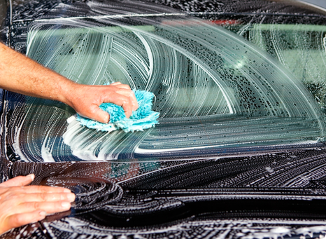
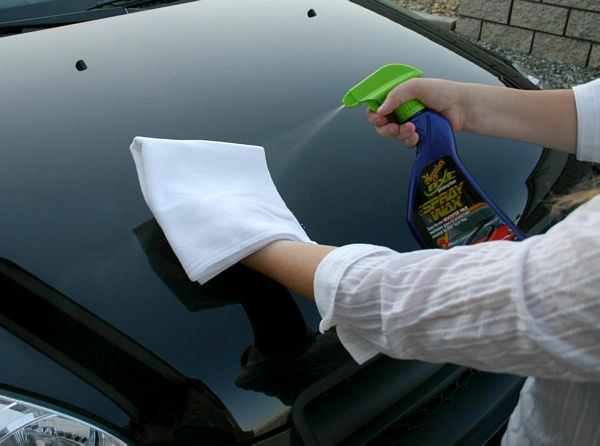

Жидкий воск - это вещество, которое наносится на поверхность кузова автомобиля с целью создания специальной защитной пленки и является одним из видов полировки. Покрытие автомобиля жидким воском придает блеск его лакокрасочному покрытию, противостоит агрессивному воздействию факторов окружающей среды и защищает кузов от неприятностей в пути. О каких факторах и неприятностях идет речь? О пыли и грязи, уличных реагентах, луж с маслом и бензином, насекомых и помете птиц, битуме и растительных смолах, а также об ультрафиолетовых лучах, которые негативным образом влияют на лакокрасочное покрытие автомобиля (особенно хороший результат имеют те автомобильные воски, в состав которых входит натуральный воск). Помимо этого жидкий воск имеет еще одно очень полезное качество - он нейтрализует остатки автохимии после мойки автомобиля и позволяет последнему оставаться чистым большее время. Поэтому мы рекомендуем наносить жидкий воск после каждой мойки. И гарантируем вам качество и надежность процедуры! Заметим, что также очень полезно применение автомобильного воска для автомобилей, прошедших восстановительную полировку.
Действуют автомобильные воски просто и эффективно. При нанесении на лакокрасочное покрытие они проникают в его поры и затрудняют доступ различного рода веществам к лаку и краске автомобиля, тем самым препятствуя их повреждению. Вода и грязь, попадая на кузов, не оседают на поверхности, а за счет низкого трения стекают обратно на дорожное покрытие. Прилипшие же насекомые, птичий помет, битум и т. д. больше не вредят лакокрасочному покрытию автомобиля, так как этому препятствует защитный слой, и весьма легко смываются (чего нельзя сказать при отсутствии защитного воскового покрытия).
Данная процедура стоит недорого и существенно не бьет по карману, поэтому отказываться от нее вряд ли имеет смысл, тем более что эффект от нее только положительный, особенно в осенне-зимний период, ведь периодическое нанесение жидкого воска позволит сохранить лакокрасочное покрытие автомобиля в его первозданном виде и значительно продлить срок его службы.
Наномойка Антидождь Инновационный автошампунь Полировка «Жидкое стекло»